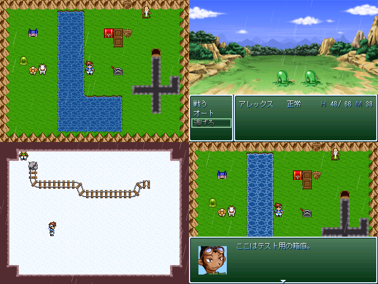

・「RPGツクール２０００」以外で作った作品には、タイトルの右側に
使用したツクールを示すアイコンが表示されます。無い作品は全て
「RPGツクール２０００」の作品です。
|
| |
 | |
| 【作者名】 | 管理人 |
| 【作者コメント】 | 結局「テスト用の箱庭」とは何だったのだろうか。 |
| 【管理人コメント】 | 作品紹介画面のサンプルです。例年通りです。以下特記事項。 ・「RPGツクール２０００」以外で作った作品には、タイトルの右側に 使用したツクールを示すアイコンが表示されます。無い作品は全て 「RPGツクール２０００」の作品です。 |
|
| |